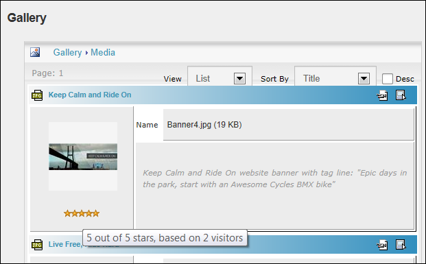
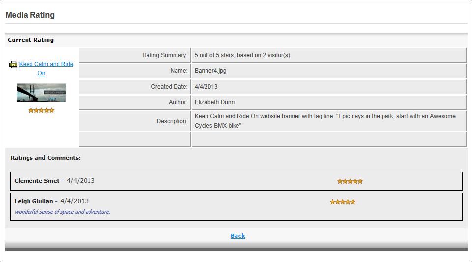

Viewing File Ratings
All site visitors can view the overall rating as well as details of all ratings given to a media file within the Gallery module. The overall rating for a file is based on the average rating given by all users who have rated the files. A file can rate from 1 to 5 stars. A rating of 0 (zero) stars indicates that the file is not yet rated. Ratings may be disabled or restricted to authorized users.
- Open the required album. See "Opening Albums"
- The overall rating between 0-5 stars is displayed below the thumbnail image for each file. Hovering your mouse over the stars will display a tool tip stating the rating out of 5 and the number of users who have voted on this files.

- Optional. To view more rating details, click the Rating icons below the required image. This opens the Media Rating page which displays the current rating information for this file including the overall rating and how it was calculated and a list of all individual ratings.

- Click the Back link to return.